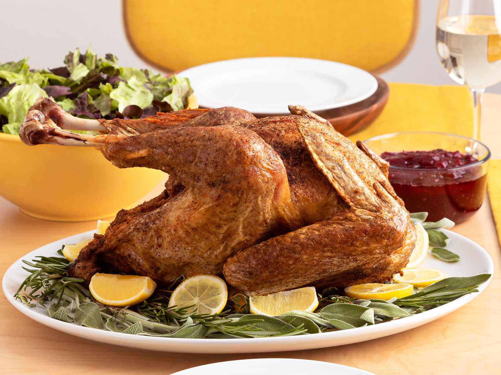

Odin Recipes
Simple Deep Fried Turkey

Description
Deep-fried turkey is a flavorful and crispy alternative to traditional roasted turkey.
The whole bird is seasoned, often with a dry rub or marinade, then submerged in hot oil
and fried until golden brown. This cooking method locks in juices, resulting in tender,
moist meat with a crispy, flavorful skin. It’s a popular choice for holiday meals, especially
in Southern U.S. cuisine, and requires careful preparation for safety due to the high-temperature oil.
Ingredients
- 3 ½ gallons peanut oil for frying
- 1 (10 pound) whole turkey, neck and giblets removed
- 1 tablespoon salt, or to taste
- 1 tablespoon ground black pepper, or to taste
How to make
-
Heat oil in a large stockpot or turkey fryer to 350 degrees F (175 degrees C).
Make sure the fryer is located outdoors in a safe area, preferably on dirt or pavement,
and far away from buildings, wooden decks, or other objects. Keep a fire extinguisher handy,
just in case.
-
Ensure that the turkey is completely thawed. Cut any extra skin away from the neck area and
make sure neck hole is at least 1 inch in diameter.
-
Pat the bird completely dry with paper towels, then rub liberally with salt and pepper on both the outside and the inside.
-
Place turkey into a drain basket, neck-side first. Working slowly and carefully, gently lower the basket into the hot oil to completely cover the turkey.
-
Maintain the temperature of the oil at 350 degrees F (175 degrees C), and cook turkey for 3 1/2 minutes per pound, about 35 minutes.
-
Carefully remove basket from oil, and drain turkey. Insert a meat thermometer into the thickest part of the thigh;
the internal temperature must be 180 degrees F (80 degrees C). Allow to rest for 15 minutes before slicing.